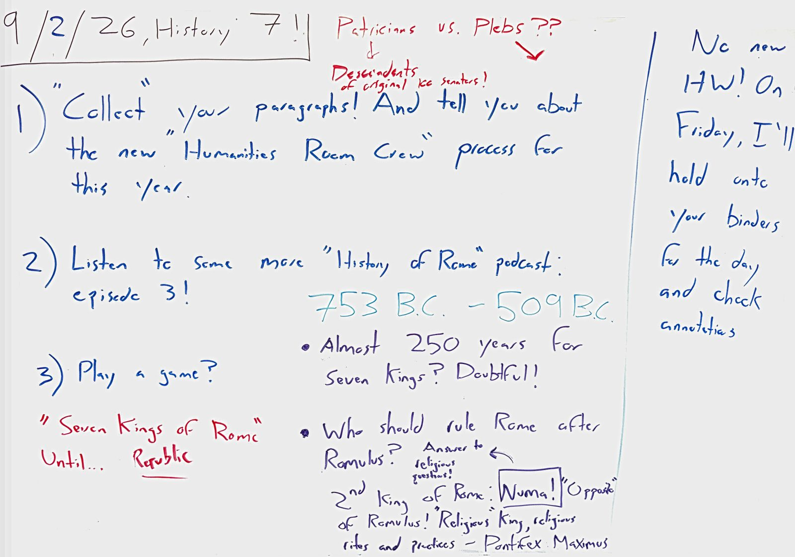

Wednesday, 9/2/26 MOST RECENT CLASS

Summary Of Class
- Collected your Romulus paragraphs, and went over the new Humanities Room Crew process for this year (check the Room Crew tab for your week!).
- Then History of Rome, episode 3! Some things to hold onto: 753 to 509 B.C. is almost 250 years for only seven kings – doubtful! And who should rule after Romulus? Numa, the second king, the "opposite" of Romulus – a religious king who created lots of religious rites and practices for the Romans, created the priesthoods, and incorporated the Vestal Virgins into the official state religion (created the office of "Pontifex Maximus").
- Patricians vs. plebs? The patricians are descended from the original 100 senators. Much more on this soon!
- Big picture: seven kings of Rome, until... the Republic!
Homework: none!
No new homework! On Friday, I'll hold onto your binders for the day and check annotations.
Board As Text
9/2/26, History 7!!
In red, top center: Patricians vs. Plebs?? → Descendants of original 100 senators!
1) "Collect" your paragraphs! And tell you about the new "Humanities Room Crew" process for this year.
2) Listen to some more "History of Rome" podcast: episode 3!
In light blue: 753 B.C. - 509 B.C.
• Almost 250 years for Seven Kings? Doubtful!
• Who should rule Rome after Romulus? → Answer to religious questions!
2nd King of Rome: Numa! "Opposite" of Romulus! "Religious" King, religious rites and practices - Pontifex Maximus
3) Play a game?
In red: "Seven Kings of Rome" Until... Republic
No new HW! On Friday, I'll hold onto your binders for the day and check annotations